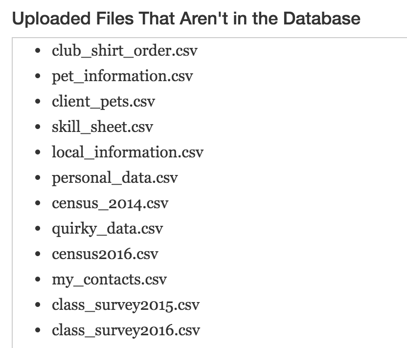
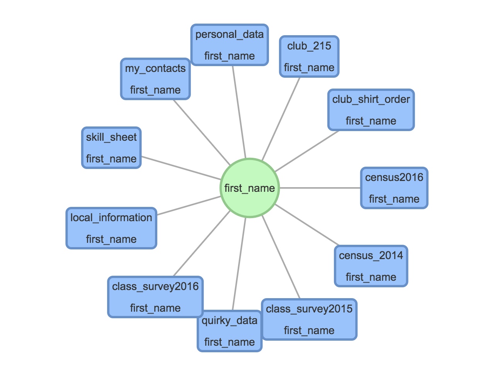
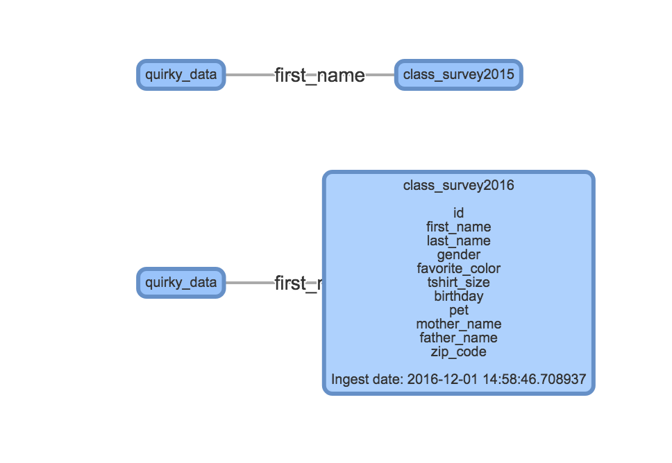

{% extends 'base.html' %}

{% block maindiv %}
<script>
    mode = null;
</script>
<div class="container" style="padding-bottom: 10%">
    <h1 align="center">Connections Application Home</h1>
    <h3 style="padding-top: 2%">Welcome {{username}},</h3>
    <div class="container-fluid row" >
        <div class="col-sm-4" id="box-menu">
               <a href="{{ url_for('auth.ingest_home') }}"> <div class="row">
                
            </div>
                <div class="row" id="menu-title"> Ingest Data</div>
                 <div class="row" id="menu-desc"> Ingestion is the first step to upload tables to the database, and selecting which tables to work with.</div>
            </a>
        </div>
        <div class="col-sm-4 row" id="box-menu">
            <a href="{{ url_for('auth.user_directed') }}"> <div>
                
            </div>
                <div class="row" id="menu-title"> User Exploration</div>
                <div class="row" id="menu-desc"> Start from a table that contains a
                        column name of interest and explore connections going outward from there. You can search
                        for tables by column name, visually find tables with similar column names, select tables
                        from this set for joining, and gradually build up a larger table that they can save and query</div>
            </a>
        </div>
         <div class="col-sm-4" id="box-menu">
            <a href="{{ url_for('auth.computer_guided') }}"> <div>
                
            </div>
                <div class="row" id="menu-title"> Computer Guided</div>
                <div class="row" id="menu-desc"> Select two column names of interest, and the program finds
                        sequences of tables that can be joined on column names that connect the two column names.
                        Youcan explore a sequence and either ask to see that sequence joined to be saved and queried
                        or ask to see another such sequence until you find one that you like.</div>
            </a>
        </div>
    </div>
</div>
{% endblock %}
<div class="panel-footer" style="text-align: center"> <p>© Copyright 2016 Group Connections of CMSC435 Fall 2016, University of Maryland
        This project is open source, according to the MIT License, which can be found at https://opensource.org/licenses/MIT.</p>
</div>
